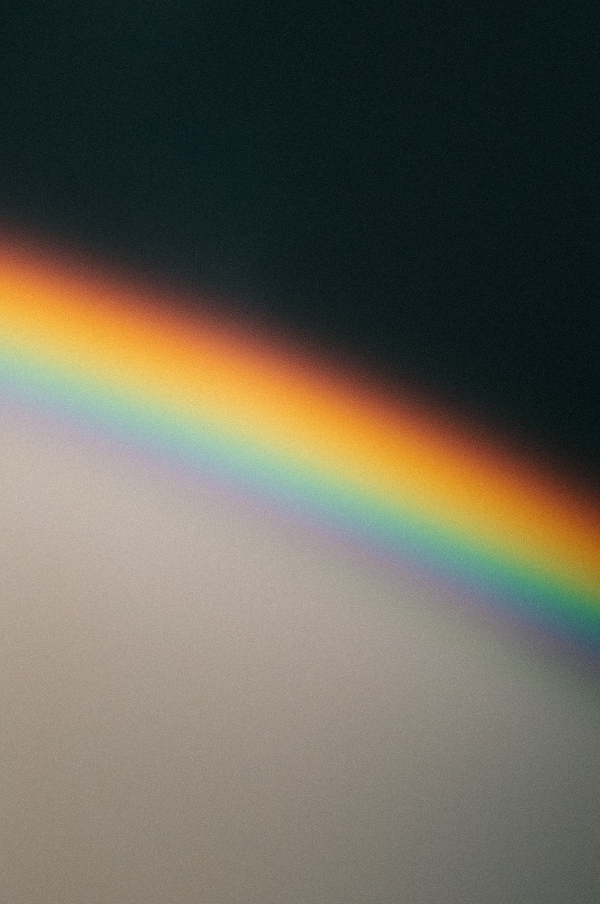
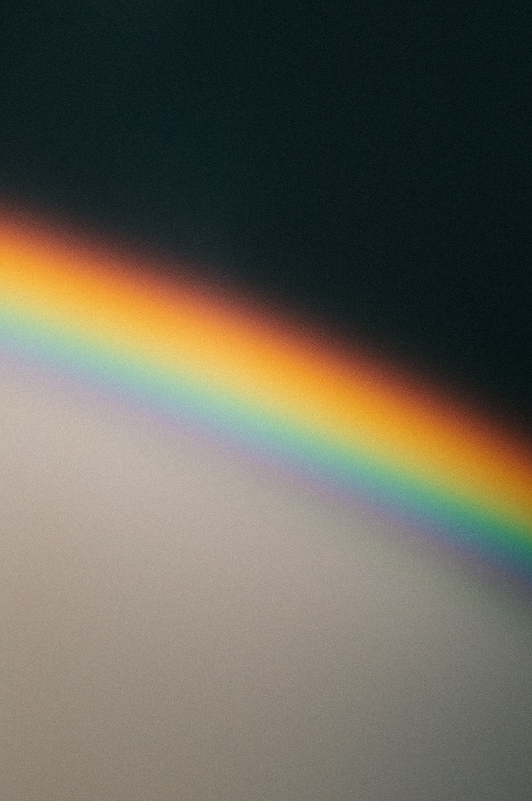
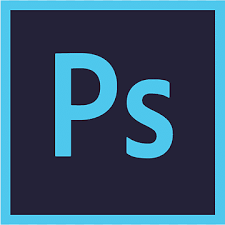
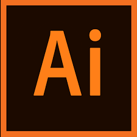

Más sobre mi
Hola, tengo 21 años. Tengo un hobby por las fotos, gracias a eso me volvi fotógrafo y aprendí edición.
Hace 4 años que trabajo en mi hobby favorito, mi proximo objetivo es estudiar y trabajar en el área de la tecnología, más específicamente como
desarrollador web.
Empecé en el mundo de la fotografía cuando tenía 10 años, mi madre me regaló mi primera cámara de fotos. Desde ese momento siempre me encantó
captar el momento en imágenes, solo quería sacar fotos. Desde ahí sólo quera enfocarme para que mi hobby sea mi trabajo.
Mis Trabajos


 



Herramientas que utilizo
-

Adobe Photoshop
-

Adobe Ligtroom
-

Adobe Illustrator